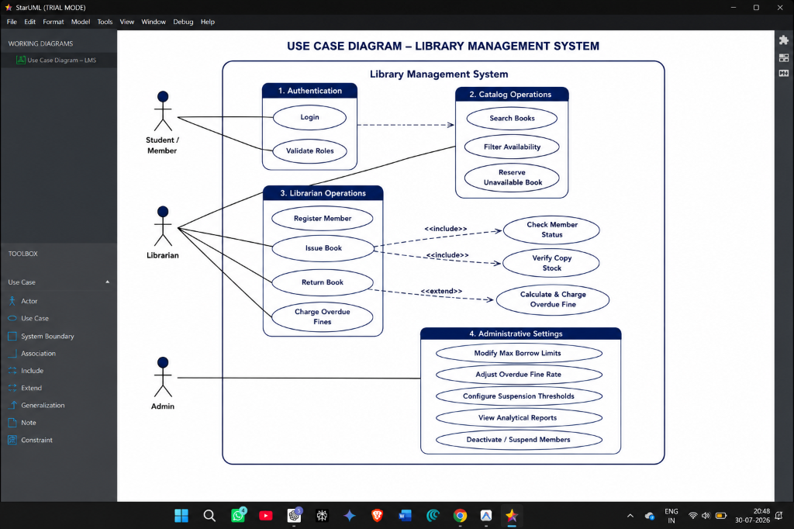
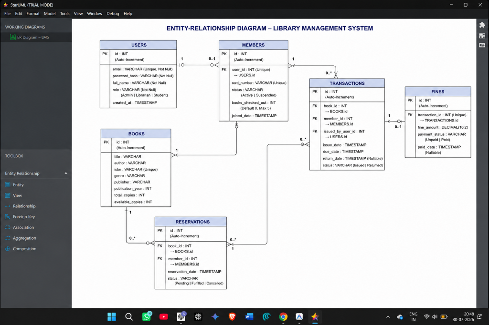
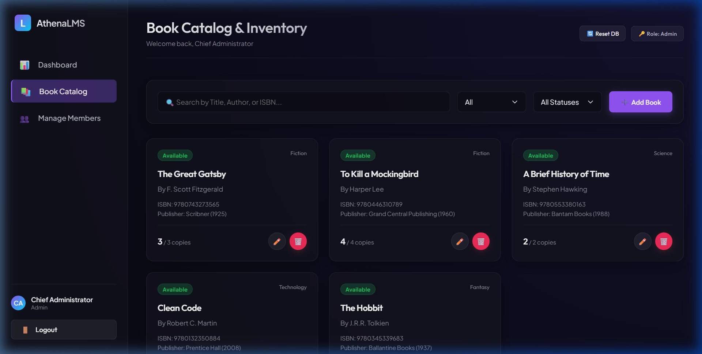
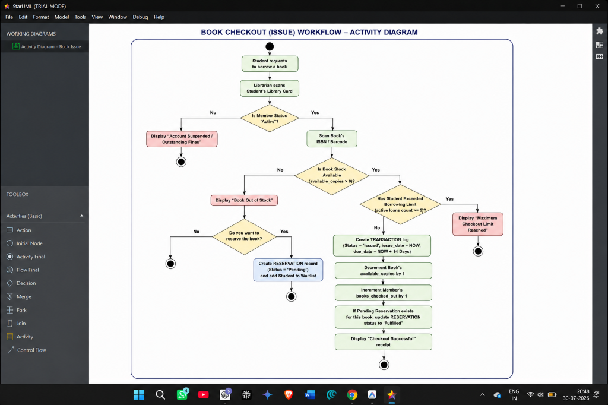
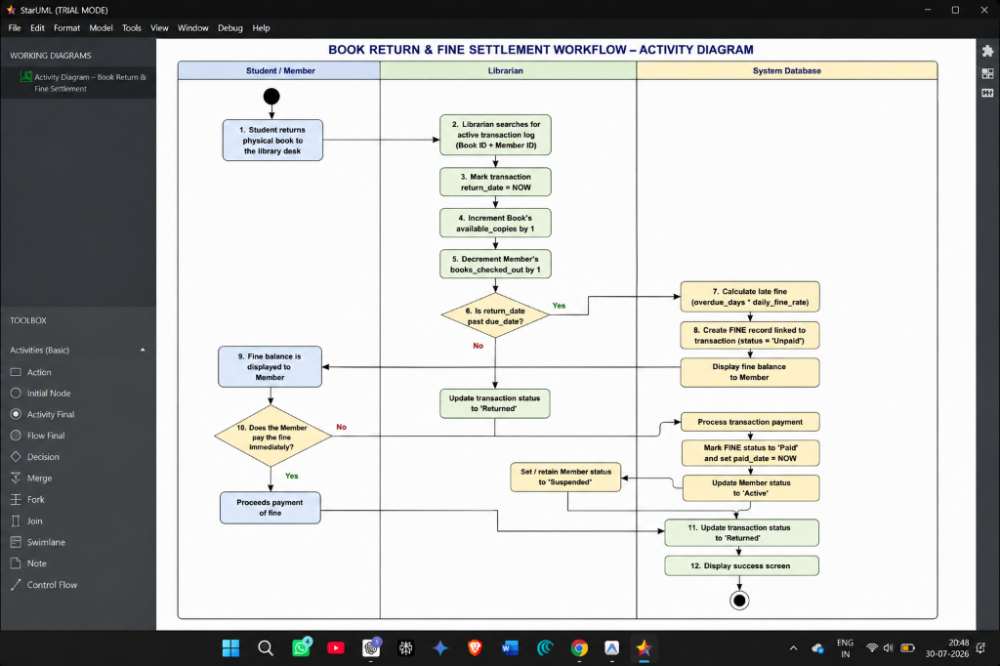
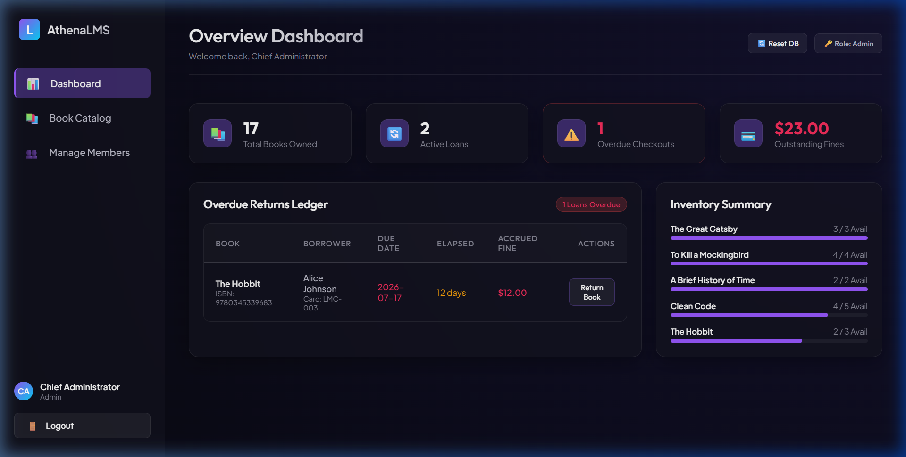

Project Overview
The Library Management System (LMS) is a single-page web application designed to digitize academic library operations. The project aims to provide a reliable, premium interface for students, librarians, and administrators to streamline library workflows such as cataloging books, managing member profiles, tracking checkouts, returns, waitlist queues, settings, and outstanding fines.
Key functional modules developed within this application include:
- User Authentication: Access credentials validation with Role-Based Access Control (RBAC) separating Admin, Librarian, and Student views.
- Book Cataloging: Comprehensive CRUD tools permitting catalog updates, live search, genre filters, and available stock control.
- Member Registry: Roster of library cardholders and standing indicators (Active vs. Suspended accounts).
- Issue & Return: Circulation logic checking borrowing limits, decrementing/incrementing stocks, and processing returns.
- Fine Engine: Dynamic daily overdue fee accruals linked to transaction due dates with settlement ledgers.
- Waitlist Queue: Book reservation system allowing students to request currently checked-out/out-of-stock items, which automatically update on return.
- Admin Policy Settings: Administrative console to adjust borrow durations, maximum limits, and daily fine rates in real time.
Jira Scrum Configuration
The project's lifecycle, sprints backlog, requirements mapping, database designs, and implementation steps were managed exclusively using Agile Scrum methodologies on Atlassian Jira.
Jira Project Key: SCRUM
Jira Site Workspace: vitstudent-team-r6bfp56o.atlassian.net
Sprint Breakdown
The project was executed in exactly one active Scrum sprint covering planning, analysis, design, and code delivery phases under the unified timeline: June 15, 2026 – August 30, 2026.
SCRUM Sprint 1
June 15, 2026 – August 30, 2026
Sprint Objective: To configure development environments, design normalized database layouts, draft requirements, build authentication guards, implement core book cataloging forms, design member listings, develop book circulation transaction mechanisms, integrate settings rules, and synchronize all source files directly to the Jira board issues.
Jira Epics & Tasks Breakdown
SCRUM-12: Project Planning
Done (100%)Type: Epic | Assignee: Sagar Bankapur
Governs the overall repository structure setup, initial scheduling, work packages planning, and project plan tracking.
Attachments:
• Project_Planning_and_Structure.docx: Document outlining structures and environment setups.
• WhatsApp Image 2026-07-27 at 9.49.54 PM.jpeg: WBS setup handwritten photo.
• WhatsApp Image 2026-07-27 at 9.49.56 PM.jpeg: WBS requirements handwritten photo.
• WhatsApp Image 2026-07-27 at 9.49.57 PM.jpeg: WBS features handwritten photo.
• WhatsApp Image 2026-07-27 at 9.50.00 PM.jpeg: WBS handover handwritten photo.


SCRUM-11: Create Project Structure
Done (100%)Type: Task (Parent: SCRUM-12) | Assignee: Sagar Bankapur
Initialize the Git code repository, compile developer packages (React, Vite, TypeScript), and configure compilation standards.
Attachments:
• library_management_system_codebase.zip: Zip containing initialized folder layout code.
• Project_Planning_and_Structure.docx: Details directory layouts.
SCRUM-18: Requirement Analysis
In ProgressType: Epic | Assignee: Unassigned
Captures system operational flow boundaries, user stories, validation thresholds, and drafts formal specifications documents.
Attachments:
• Requirements_Analysis_SRS.docx: Details functional specifications and use cases.
• use_case_diagram.png: StarUML boundary use case diagram.

SCRUM-10: Research Library Requirements
In ProgressType: Task (Parent: SCRUM-18) | Assignee: Aella Harsha Vardhan Reddy 24BCE1254
Compile detailed business logic parameters, cardholder standing criteria, and model use cases diagrams.
Attachments:
• SRS.md, WBS.md, Requirements_Analysis_SRS.docx, use_case_diagram.png, Project_Planning_and_Structure.docx.
SCRUM-19: System Design
In ProgressType: Epic | Assignee: Aella Harsha Vardhan Reddy 24BCE1254
Draft relational database schemes, entity representations, relationships cardinality, and structural ERDs.
Attachments:
• System_Design_Database_Schema.docx: Schema specifications document.
• er_diagram.png: StarUML ER diagram.

SCRUM-6: Design Database Schema
In ProgressType: Task (Parent: SCRUM-19) | Assignee: Sagar Bankapur
Establish normalized 3NF relational data tables (users, members, books, transactions, fines, settings, and reservations).
Attachments:
• Database_Design.md, System_Design_Database_Schema.docx, er_diagram.png.
SCRUM-13: User Authentication
In ProgressType: Epic | Assignee: Sagar Bankapur
Enforces security boundaries, login interface views, session storage, and route authorization contexts.
SCRUM-7: Create Login Page UI
In ProgressType: Task (Parent: SCRUM-13) | Assignee: Aella Harsha Vardhan Reddy 24BCE1254
Build the frontend login UI component including input validations and glassmorphism themes styling.
Attachments:
• Login.tsx: React code file for login view.
• login_ui_mockup.png: UI page screenshot.
SCRUM-8: Implement User Authentication
In ProgressType: Task (Parent: SCRUM-13) | Assignee: Sagar Bankapur
Develop local storage session persistence and Role-Based Access Control (RBAC) hooks.
Attachments:
• AuthContext.tsx: Context wrapper source code.
SCRUM-14: Book Management
In ProgressType: Epic | Assignee: Sagar Bankapur
Manages book catalogs, availability indicators, search filters, and inventory modifications.
Attachments:
• Books.tsx: Books component source file.
SCRUM-9: Design Book Management Module
In ProgressType: Task (Parent: SCRUM-14) | Assignee: Sagar Bankapur
Build inventory forms enabling librarians to add, edit, and archive book resources, alongside search filters.
Attachments:
• Books.tsx: React file.
• book_catalog_1785261304299.png: UI screenshot.

SCRUM-15: Member Management
In ProgressType: Epic | Assignee: Sagar Bankapur
Manages cardholder registries, enrollment details, active borrowings limits, and member suspensions.
Attachments:
• MyLoans.tsx: Student loans view component code.
SCRUM-16: Issue & Return
In ProgressType: Epic | Assignee: Aella Harsha Vardhan Reddy 24BCE1254
Core transaction circulation log handler processing checkouts, check-ins, return dates, and daily fines calculation.
Attachments:
• LibraryContext.tsx, storage.ts, library_management_system_advanced_features.zip.
• checkout_activity_diagram.png: Issue flow activity diagram.
• return_activity_diagram.png: Return flow activity diagram.


SCRUM-17: Reports & Dashboard
In ProgressType: Epic | Assignee: Aella Harsha Vardhan Reddy 24BCE1254
Librarian metrics dash panel, transaction grids, fine ledgers, waitlists queue, and administrative policies configurator.
Attachments:
• Dashboard.tsx, Settings.tsx, Project_Status_Snapshot.md, main_dashboard_1785261292483.png.

Setup & System Integration Work Items
The following tasks represent standard configurations and setup logs:
• SCRUM-1: Start here: Add your team's work (In Progress - Unassigned): Default Atlassian initial setup guidelines ticket.
• SCRUM-2: Connect your coding agent to Jira (In Progress - Unassigned): Configuration ticket linking IDE plugins to the Jira API.
• SCRUM-3: Connect Atlassian Rovo MCP to your local coding tools (In Progress - Unassigned): Setup ticket configuring Atlassian Rovo protocol hooks.
• SCRUM-4: Delegate this work item to a coding agent (In Progress - Unassigned): Subtask tracking automation actions.
• SCRUM-5: Implement this work item from your IDE or terminal (In Progress - Unassigned): Subtask tracking manual code check-ins.